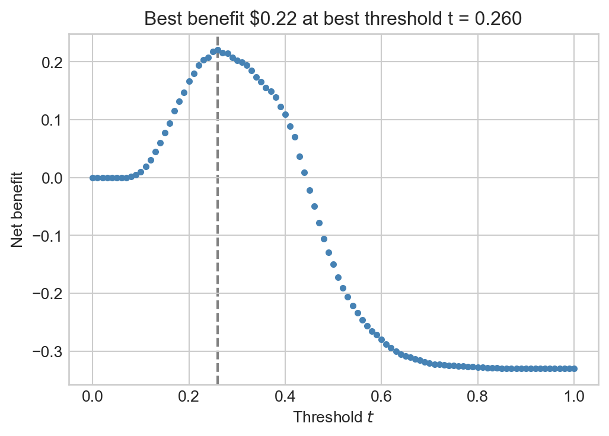

Download the live notebook corresponding to these notes here.
Last time…
…we considered a prediction problem in which we observed \(p\) attributes of prospective borrower \(i\) in the form of a vector \(\mathbf{x}_i \in \mathbb{R}^p\). We then formed a score for prospective borrower \(i\) using a weight vector \(\mathbf{w}\in \mathbb{R}^p\) and an inner product:
We also developed the ability to compute nonlinear scores by instead computing the score as \(s_i = \langle \mathbf{w},\phi(\mathbf{x}_i) \rangle\), where \(\phi\) was a feature map that computed nonlinear functions of the entries of \(\mathbf{x}_i\). For reasons that we’ll learn about when we study the theory of machine learning, this is still called a linear model, due to the fact that the score is a linear function of the vector \(\mathbf{w}\). In this set of notes, we’ll always assume that \(\mathbf{x}\) has already had a feature map applied to it, so that we can just focus on the simpler form of Equation 4.1.
Then, we classified prospective borrowers into two categories based on a threshold \(t \in \mathbb{R}\):
Borrowers who receive a loan had the property \(s_i \leq t\).
Borrowers who do not receive a loan have the property \(s_i > t\).
Equation 4.1 says that the score should be computed as a linear function of the features \(\mathbf{x}_i\). Models with this property are called linear models and are fundamental in both classification and regression tasks.
In this set of notes, we are going to focus on one of the many questions we might ask about this framework: how do we choose the threshold \(t\)? As we’ll see, this is a surprisingly tricky question that depends heavily on context.
We’ll study later how to find \(\mathbf{w}\).
Lending Data Set
To illustrate our discussion, we are going to pull up the lending data set from the previous section.
Code
import pandas as pdimport numpy as npfrom matplotlib import pyplot as pltnp.set_printoptions(precision =3)plt.style.use('seaborn-v0_8-whitegrid')url ="https://raw.githubusercontent.com/PhilChodrow/ml-notes/main/data/credit-risk/credit_risk_dataset.csv"
Following the usual paradigm in machine learning, we’re going to incorporate two elements which we previously saw when studying the Palmer penguins. First, we are going to hold off a part of our data set that we will not use for making any choices about how we design our decision algorithm. This held-off part of the data is called the test set. We’ll use it for a final evaluation of our model’s performance.
from sklearn.model_selection import train_test_splitdf_train, df_test = train_test_split(df, test_size =0.2, random_state =123) # 20% test set
Next, we’ll distinguish our predictor and target variables in each of the train and test sets.
Suppose that we have a weight vector \(\mathbf{w}\) and that we’d like to choose a threshold \(t\). To do this, we will compute all the scores on the training data and do some experiments. How should we compute training scores? As we know, the \(i\)th score is given by Equation 4.1. To compute scores for all \(n\) of our training points, we could write a loop like this:
In our case, \(n =\) 23572, the number of rows in the training data.
s = [] # vector of scoresfor i inrange(n): s.append(compute_score(X[i], w))
where X[i] is the ith data point \(\mathbf{x}_i\) and compute_score is a function that computes the score according to Equation 4.1. However, there’s a better way to do this if we step back from code into math for a moment. If \(\mathbf{s} \in \mathbb{R}^n\) is a vector whose \(i\)th entry is the score \(s_i\), then we have
Now that we have the scores, we can easily simulate decision-making with a given threshold. For example, the proportion predicted to default on their loan with a given threshold \(t\) can be computed like this:
t =0.4preds = s >= tpreds.mean()
0.15386899711522145
So, how should we choose the threshold \(t\)? One possibility would be to try to choose the threshold in a way that maximizes the training accuracy, the number of times that the prediction agrees with the actual outcome (repaid or default) on the training data. Here’s an example of a quick grid search:
for t in np.linspace(0, 1, 11): y_pred = s >= t acc = (y_pred == y_train).mean()print(f"A threshold of {t:.1f} gives an accuracy of {acc:.2f}.")
A threshold of 0.0 gives an accuracy of 0.22.
A threshold of 0.1 gives an accuracy of 0.23.
A threshold of 0.2 gives an accuracy of 0.46.
A threshold of 0.3 gives an accuracy of 0.71.
A threshold of 0.4 gives an accuracy of 0.82.
A threshold of 0.5 gives an accuracy of 0.80.
A threshold of 0.6 gives an accuracy of 0.79.
A threshold of 0.7 gives an accuracy of 0.78.
A threshold of 0.8 gives an accuracy of 0.78.
A threshold of 0.9 gives an accuracy of 0.78.
A threshold of 1.0 gives an accuracy of 0.78.
However, accuracy is not always the most relevant measure. For example, Field and Stream estimates that there are, globally, approximately 70 unprovoked shark attacks each year. Since the population of the world is currently around \(8.1\times 10^9\) people, the average probability that a specific individual will suffer an unprovoked shark attack in a year is approximately \(70 / (8.1 \times 10^9) \approx 8.6 \times 10^{-9}\). So, if we created a shark attack predictor which always predicted “no shark attack,” our model would be correct approximately 99.999999% of the time. However, this model wouldn’t be very useful, and wouldn’t have anything to tell us about the activities that increase or reduce the risk of experience an attack.
A second reason we may wish to measure something other than accuracy has to do with asymmetrical costs of error. If we incorrectly predict that an individual will suffer a shark attack but no attack occurs, this is not that big a problem. Yes, we were wrong, but no one got hurt. In contrast, if we incorrectly predict that an individual will not suffer a shark attach, then this is a big problem which potentially involves grievous bodily injury, death, trauma, legal liability, etc. So, in designing our predictor, we might want to prioritizing avoiding the second kind of error, even if that leads us to make more of the first kind of error.
What are the types of error? For a binary outcome with a binary predictor, there are four possibilities:
Table 4.1: Types of correct classifications and errors in a binary classification problem.
Abbreviation
True Outcome
Predicted Outcome
True positive
TP
1
1
False negative
FN
1
0
False positive
FP
0
1
True negative
TN
0
0
Given a vector of true outcomes \(\mathbf{y}\) and a vector of predictions \(\hat{\mathbf{y}}\), we can calculate frequencies of each outcome. For example, here are the false positives associated with a given threshold value:
t =0.5y_pred = s >= t # number where outcome == 0 and prediction == 1((y_train ==0)*(y_pred ==1)).sum()
286
In practice, it’s more convenient to compute all the error rates at once using the confusion matrix:
from sklearn.metrics import confusion_matrixconfusion_matrix(y_train, y_pred)
It is common to normalize these counts into rates:
Abbreviation
Formula
True negative rate
TNR
\(\frac{\mathrm{FP}}{\mathrm{FP} + \mathrm{TN}}\)
False positive rate
FPR
\(\frac{\mathrm{FP}}{\mathrm{FP} + \mathrm{TN}}\)
False negative rate
FNR
\(\frac{\mathrm{FN}}{\mathrm{TP} + \mathrm{FN}}\)
True positive rate
TPR
\(\frac{\mathrm{TP}}{\mathrm{TP} + \mathrm{FN}}\)
Intuitively, the TPR measures the proportion of the time that the classifier predicts the correct (positive) label when the true outcome was positive. Similarly, the FPR measures the proportion of the time that the classifier predicts the incorrect (positive) label when the true outcome was negative. Because \(\mathrm{TPR} = 1 - \mathrm{FNR}\) and \(\mathrm{FPR} = 1 - \mathrm{TNR}\), folks usually only bother remembering and using \(\mathrm{TPR}\) and \(\mathrm{FNR}\).
Rather than computing these by hand, Scikit-learn offers a handy argument to confusion_matrix for computing these automatically and simultaneously:
Let’s do a quick check against the FPR using manual vectorized code.
Cases where y_pred == 1 correspond to positive predictions, while cases where y_train == 0 correspond to true negative outcomes.
# agrees with the top right corner of the normalized confusion matrix((y_pred ==1) & (y_train ==0)).sum() / (y_train ==0).sum()
0.015587529976019185
The ROC Curve
For any given value of the threshold \(t\), we can compute the TPR and FPR. We can think of this process as defining a parametrized function, a curve in TPR-FPR space. This curve is the ROC curve
ROC stands for “receiver operating characteristic,” a term that reflects the origin of the curve in detection of objects by radar.
To compute an ROC curve, we simply need to compute the TPR and FPR for many different values of the threshold \(t\) and plot them.
fig, ax = plt.subplots(1, 1, figsize = (6, 4))num_thresholds =101FPR = np.zeros(num_thresholds)TPR = np.zeros(num_thresholds)T = np.linspace(s.min()-0.1, s.max()+0.1, num_thresholds)s = linear_score(X_train, w)for i inrange(num_thresholds): t = T[i] preds = s >= t FPR[i] = ((preds ==1) & (y_train ==0)).sum() / (y_train ==0).sum() TPR[i] = ((preds ==1) & (y_train ==1)).sum() / (y_train ==1).sum()ax.plot(FPR, TPR, color ="black")ax.plot([0,1], [0,1], linestyle="--", color ="grey")ax.set_aspect('equal')labs = ax.set(xlabel ="False Positive Rate", ylabel ="True Positive Rate", title ="ROC Curve")

We can think of the ROC curve as a description of all the possible tradeoffs between the TPR and FPR that are achievable for a given score as we vary the threshold \(t\). For example, the curve tells us that if we are willing to tolerate a false positive rate of 0.40, then the best true positive rate we can achieve is approximately 0.77.
ROC curves are often used as a measure of the ability of a score function to classify data into two groups. Curves that bend farther towards the upper left corner of the plot are generally viewed as more effective classifiers. The area under the curve (AUC) is sometimes used as a single quantitative measure describing the classification quality.
Cost of Errors and Optimal Thresholding
How do we choose the tradeoff that works best for us? To answer this kind of question, we need to reflect back on the purpose for which we are building a classifier. According to Table 4.1, there are two ways to be correct (true positive, true negative) and two ways to make an error (false positive, false negative). In order to choose an appropriate tradeoff, we need to think about the benefit of being right in relation to the cost of being wrong.
A logical way for a bank to approach this problem would be from the perspective of profit-maximization. In the lending business, a bank can make money when loans are fully repaid with interest, but lose money (usually much more) when an individual defaults on the loan. To keep the problem simple, suppose that the bank gains $1 every time they make a loan which is successfully paid back, and that the bank loses $2 every time they make a loan which ends in default. The first scenario happens when the bank makes a true positive identification, while the second case happens when the bank makes a false negative classification. For a given threshold, the expected gain for the bank when making a loan is then
Remember that the “positive” outcome in this data set is default.
For these costs, we observe that the bank can make a small expected profit (roughly 17 cents per loan) by using the given score function with threshold of roughly \(t \approx 0.21\). Note that this is very different from the value of the thresold \(t \approx 0.4\) which maximized the unweighted accuracy of the predictor.
At this stage, we could go on to estimate the profit gained by using this predictor and threshold on the test data set instead of the training data set. The code below simply consolidates the many steps that we have walked through in these notes, applied to the test data.
t =0.21# compute the scoress = linear_score(X_test, w)preds = s >= t# compute error ratesFPR = ((preds ==1) & (y_test ==0)).sum() / (y_test ==0).sum()TPR = ((preds ==1) & (y_test ==1)).sum() / (y_test ==1).sum()TNR =1- FPRFNR =1- TPR# compute the expected gaingain = gain_of_TN*TNR + cost_of_FN*FNR gain
0.17641653321131712
Our performance on the test data is very slightly worse than our performance on the training data, which is to be expected.
Recap
In these notes, we studied a simple question: given a score \(s_i = \langle \mathbf{x}_i, \mathbf{w}\rangle\), how should we convert that score into a yes/no decision? We found that adjusting the threshold can have major consequences for the accuracy of the resulting classification algorithm, but also that pure accuracy may not be the most relevant metric to measure or optimize. We computed the ROC curve of the score, which is a visual indicator of the overall ability of the score function to balance the false positive rate against the true positive rate. Finally, we explored the possible tradeoffs between different kinds of errors by considering a simplified scenario in which different kinds of errors have different costs associated with them. We found that the threshold that optimizes expected gain under this setting can be very different from the threshold that optimizes unweighted accuracy.
Who Sets The Cost? Who Pays the Cost?
In our analysis above, we assumed a simple optimization objective: the bank is going to maximize its net profit. In formulating this objective, we made assumptions about the costs of different outcomes – to the bank. It’s important to note that the costs of errors to the bank may look very different from the costs of those errors to individuals. For example, if the bank’s prediction system recommends that an individual be denied a loan and the bank acts on this recommendation, then the bank pays no cost. On the other hand, the individual may experience major costs, depending on the purpose for which the loan was requested.
This data set includes a coarse description of the purpose of each loan:
df_all.groupby("loan_intent").size()
loan_intent
DEBTCONSOLIDATION 5212
EDUCATION 6453
HOMEIMPROVEMENT 3605
MEDICAL 6071
PERSONAL 5521
VENTURE 5719
dtype: int64
What are the costs of being denied access to borrowed funds to pursue education? What about for medical care?
It is of fundamental importance to remember that machine learning systems are embedded in social context; that they are generally developed and implemented by people and organizations that occupy positions of power; and that the costs of these systems are often unequally shared by the people they impact. We will discuss these considerations in much greater detail soon.